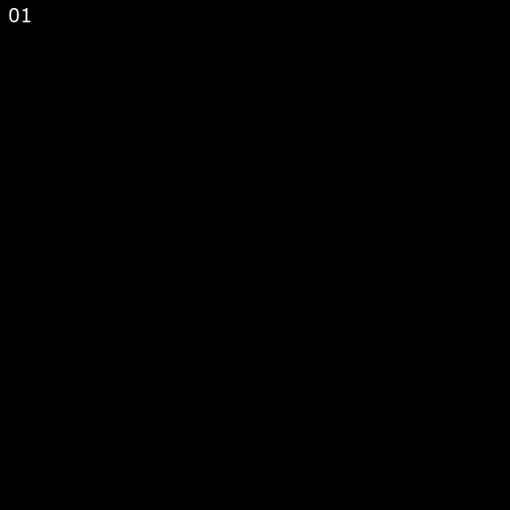

Qwen-Image は中国 Alibaba Cloud の画像生成AIである。2025-12-31に後継の Qwen-Image-2512 が出たので本ページもそちらに合わせて改訂した。
ここではMacでPythonで動かす方法をメモしておく（私のは M4 Max Mac Studio 128GB）。別の方法として、GGUF版をComfyUIかstable-diffusion.cppで動かす手がある。
まずPyTorchと最新のdiffusersをインストールしておく（pip install torch diffusers）。これでうまくいくはずだが、一般論として、diffusersがうまく動かないときは開発版を使う（pip install git+https://github.com/huggingface/diffusers）。あとは、サンプルコードを適宜書き直して使う。
from diffusers import DiffusionPipeline
import torch
model_name = "Qwen/Qwen-Image-2512"
torch_dtype = torch.bfloat16 # torch.bfloat16/torch.float32
device = "mps" # cuda/mps/cpu
pipe = DiffusionPipeline.from_pretrained(model_name, torch_dtype=torch_dtype).to(device)
prompt = '''A 20-year-old East Asian girl with delicate, charming features and large, bright brown eyes—expressive and lively, with a cheerful or subtly smiling expression. Her naturally wavy long hair is either loose or tied in twin ponytails. She has fair skin and light makeup accentuating her youthful freshness. She wears a modern, cute dress or relaxed outfit in bright, soft colors—lightweight fabric, minimalist cut. She stands indoors at an anime convention, surrounded by banners, posters, or stalls. Lighting is typical indoor illumination—no staged lighting—and the image resembles a casual iPhone snapshot: unpretentious composition, yet brimming with vivid, fresh, youthful charm.'''
negative_prompt = "低分辨率，低画质，肢体畸形，手指畸形，画面过饱和，蜡像感，人脸无细节，过度光滑，画面具有AI感。构图混乱。文字模糊，扭曲。"
aspect_ratios = {
"1:1": (1328, 1328),
"16:9": (1664, 928),
"9:16": (928, 1664),
"4:3": (1472, 1104),
"3:4": (1104, 1472),
"3:2": (1584, 1056),
"2:3": (1056, 1584),
}
width, height = aspect_ratios["16:9"] # 20分程度
# width, height = 640, 640 # 4分程度
image = pipe(
prompt=prompt,
negative_prompt=negative_prompt,
width=width,
height=height,
num_inference_steps=50,
true_cfg_scale=4.0,
generator=torch.Generator(device=device).manual_seed(42)
).images[0]
image.save("example.png")
# image.save("example.webp", lossless=True, method=6)
プロンプトはこのツールで変換すると品質が高まる。
以下はQwen-Image（2512でないもの）を使って試したものである。
拡散モデルの働きを理解するために、途中段階を書き出すコードをGPT-5に書いてもらった。追加部分のみ記す。
height, width = 640, 640
# --- live preview callback ---
def on_step_end(pipe, i, t, kw):
tokens = kw["latents"] # shape: [B, num_patches, 64]
with torch.no_grad():
# 1) unpack packed tokens -> VAE latent grid [B, z_dim(=16), T(=1), H, W]
lat = pipe._unpack_latents(tokens, height, width, pipe.vae_scale_factor) # private helper used by the pipeline
# 2) match VAE dtype/device
lat = lat.to(pipe.vae.dtype, non_blocking=True)
# 3) un-normalize (pipeline does this right before decoding)
mean = torch.tensor(pipe.vae.config.latents_mean, device=lat.device, dtype=lat.dtype).view(1, pipe.vae.config.z_dim, 1, 1, 1)
stdinv = 1.0 / torch.tensor(pipe.vae.config.latents_std, device=lat.device, dtype=lat.dtype).view(1, pipe.vae.config.z_dim, 1, 1, 1)
lat = lat / stdinv + mean
# 4) decode and postprocess to a PIL image
frame = pipe.vae.decode(lat, return_dict=False)[0][:, :, 0] # take temporal dim 0
pil = pipe.image_processor.postprocess(frame, output_type="pil")[0]
pil.save(f"step_{i:03d}.webp") # or display in-notebook
print(f"[preview] step {i:02d} saved")
# IMPORTANT: return the (possibly updated) tensors for the sampler to continue
return {"latents": tokens}
image = pipe(
prompt=prompt + positive_magic["en"],
negative_prompt=" ",
width=width,
height=height,
num_inference_steps=50,
true_cfg_scale=4.0,
generator=torch.Generator(device=device).manual_seed(42),
callback_on_step_end=on_step_end,
callback_on_step_end_tensor_inputs=["latents"],
).images[0]
できた50枚のWebPを結合して動画にしてみた（ffmpeg -framerate 12 -i step_%03d.webp -c:v libx264 -pix_fmt yuv420p qwen_steps.mp4）。
次は num_inference_steps を1から25まで変えた結果である。こちらはanimated WebP形式にしてみた。

最後のanimated WebPの作り方：
ffmpeg -framerate 5 -i example%03d.webp \
-vf "drawtext=: \
text='%{eif\:n+1\:d\:02}': \
x=10:y=10:fontsize=24:fontcolor=white:box=1:boxcolor=black@0.5" \
-c:v libwebp -lossless 0 -q:v 80 -loop 0 output.webp